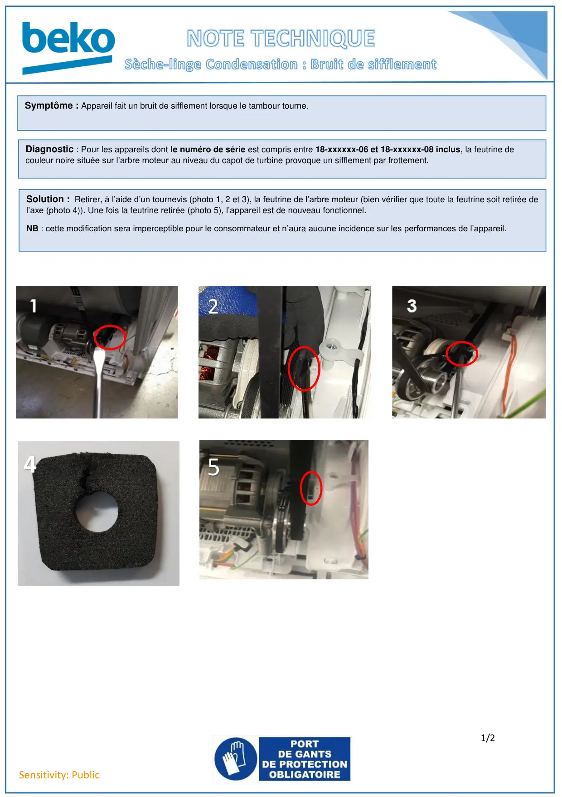
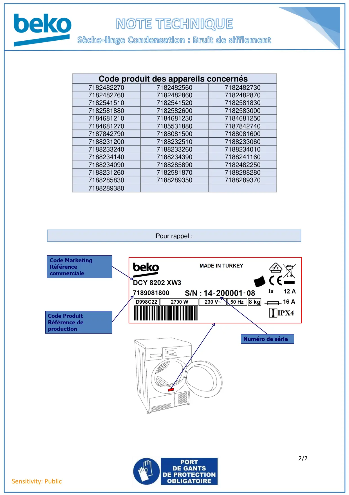

Feutrine arbre moteur bruyante

1/2Sensitivity: PublicSymptôme : Appareil fait un bruit de sifflement lorsque le tambour tourne.Diagnostic : Pour les appareils dont le numéro de série est compris entre 18-xxxxxx-06 et 18-xxxxxx-08 inclus, la feutrine decouleur noire située sur l’arbre moteur au niveau du capot de turbine provoque un sifflement par frottement.Solution : Retirer, à l’aide d’un tournevis (photo 1, 2 et 3), la feutrine de l’arbre moteur (bien vérifier que toute la feutrine soit retirée del’axe (photo 4)). Une fois la feutrine retirée (photo 5), l’appareil est de nouveau fonctionnel.NB : cette modification sera imperceptible pour le consommateur et n’aura aucune incidence sur les performances de l’appareil.452
1 / 2
2/2Sensitivity: PublicCode produit des appareils concernés7182482270718248256071824827307182482760718248286071824828707182541510718254152071825818307182581880718258260071825830007184681210718468123071846812507184681270718553188071878427407187842790718808150071880816007188231200718823251071882330607188233240718823326071882340107188234140718823439071882411607188234090718828589071824822507188231260718258187071882882807188285830718828935071882893707188289380Pour rappel :
2 / 2